From Noise to Insight
Move from friction
to flow.
Most people try to improve their thinking.
It can be seen through
instead.
You're not stuck.
You're experiencing system noise.
When the
noise
settles,
clarity appears on its own.
30 minutes · online · no preparation needed
You aren't broken. You're just experiencing "System Noise."
For 40 years—as an international athlete and an educator—I’ve studied the mechanics of human potential. Most people are taught to work harder on their problems. I teach you how to subtract the noise that creates them. Whether you are navigating the City of London or navigating a personal crisis, the exit is the same: Insight.
Personal Sovereignty
Self-Esteem
Anxiety
Confidence
Burnout
Master your internal mechanics. I teach you how to quiet the noise of overthinking so your natural resilience can surface.
Relational Freedom
People-Pleasing
Boundaries
Dating
Learn to set boundaries without guilt and move from people-pleasing to authentic connection. Reclaim your voice.
Strategic Impact
Entrepreneurship
Purpose
Career
Execute with precision. Eliminate the cognitive friction that leads to stagnation. Achieve your goals through insight, not just effort.
40 Years of Evidence. Academic Foundation. Elite Results.
BSc (Hons) Sports Science: The academic foundation of my understanding of human mechanics and the "CPU" of performance.
Master Practitioner of NLP: Certified at the highest level in Neuro-Linguistic Programming and Time Line Therapy®, specializing in deep cognitive transformation.
17 Years as a Master Educator: Leading Sports Science and Strategic Performance Development in high-speed educational environments.
Elite Sport & Movement Authority: 12 years in professional sport performance combined with Level 3 Pilates and Level 4 Advanced Personal Training qualifications.
Holistic Systems Expertise: 3-year Diploma in Nutrition (Level 5) and certified Spiritual Life Coach, bridging the gap between physical health and inner peace.
I don't just "coach" mindset
I understand the biological and psychological systems that drive it.